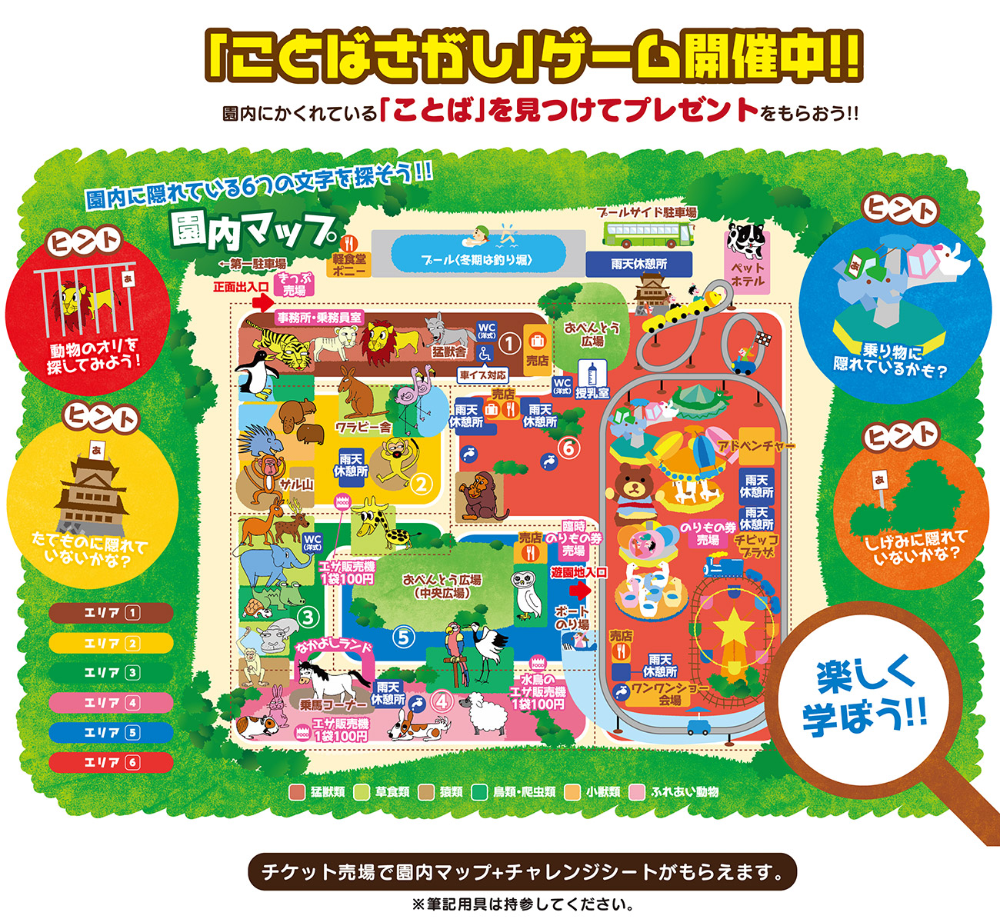

<ons-page id="map" ng-controller="MapController" modifier="background">
    <!-- ツールバー -->
    <ons-toolbar modifier="toolbar">
        <div class="left">
            <ons-back-button modifier="toolbar">Back</ons-back-button>
        </div>
        <div class="center">動物図鑑</div>
        <div class="right">
            <ons-toolbar-button>
                <ons-icon icon="fa-qrcode" class="toolbarIcon"></ons-icon>
            </ons-toolbar-button>
        </div>
    </ons-toolbar>

    <!-- 本体 -->
    <ons-gesture-detector>
      
    </ons-gesture-detector>
</ons-page>